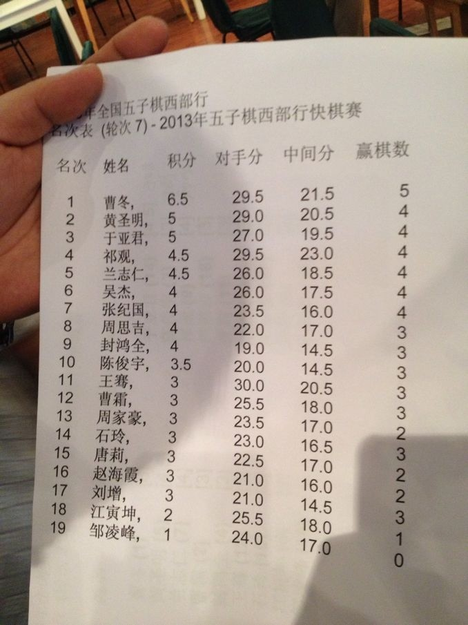

2013五子棋西部行活动圆满结束
首页
五子棋新闻
#1 2013五子棋西部行活动圆满结束 作者：梧桐风 发表时间：2013-9-2 8:48:27
中国棋牌网讯 由国家体育总局棋牌运动管理中心、中国围棋协会五子棋分会主办，重庆市棋牌运动管理中心承办的2013年棋牌项目西部行―五子棋西部行活动于2013年8月23日至25日在美丽的西南山城重庆市举办。重庆市是我国的四大直辖市之一，有着悠久的棋类运动传统，这里名将辈出，棋牌爱好者众多。
本次五子棋西部行活动包括了全国五子棋初级教练员培训班、知名棋手车轮战、五子棋快棋赛等三项内容。其中，五子棋初级教练员培训班是首次举办，为西部省份的五子棋项目推广培养了基层人才；车轮战由全国冠军曹冬、朱建锋、祁观、兰志仁担当擂主，棋迷们能与全国冠军一角高低，大呼过瘾；快棋赛紧张激烈，经过7轮的鏖战，名不见经传的年轻棋手也能挤进前8名。传承文化、服务群众是项目发展的不竭动力。我们相信，借助西部行活动的契机，必将进一步推动五子棋在西南地区的广泛开展。
（林丽梅）
#2 Re:2013五子棋西部行活动圆满结束 作者：屏蔽 发表时间：2013-9-2 8:50:54

#3 Re:2013五子棋西部行活动圆满结束 作者：鱼岛岛主 发表时间：2013-9-2 12:41:19
名不见经传8强是谁啊
#4 Re:2013五子棋西部行活动圆满结束 作者：屏蔽 发表时间：2013-9-2 13:01:49
看这地界儿 莫非是天道
#5 Re:2013五子棋西部行活动圆满结束 作者：鱼岛岛主 发表时间：2013-9-2 15:38:50
比赛名单

#6 Re:2013五子棋西部行活动圆满结束 作者：华夏使者 发表时间：2013-9-2 22:20:49
靠，你那淘换来的
#7 Re:2013五子棋西部行活动圆满结束 作者：鱼岛岛主 发表时间：2013-9-2 22:42:12
呵呵 你管我呢，你知道我是无所不能的鱼岛岛主就可以了。